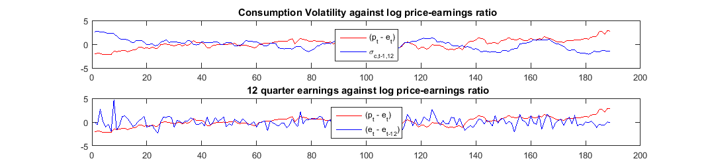

Contents
Empirical
clear all
cd('E:\研一暑假\WISE\Ren yu\Interpretable asset markets\Data');
load('result.mat');
Summary statistics
f1 = figure('Name','Summary statistics','NumberTitle','off');
t = uitable(f1,'Data',table_data,'Position',[40 220 450 140]);
t.RowName = RowName;
t.ColumnName = ColumnName;
sub_t = uitable(f1,'Data',sub_table_data,'Position',[40 80 450 140]);
sub_t.RowName = RowName;
sub_t.ColumnName = ColumnName;
Table 2
clf
f2 = figure('Name','Consumption growth and market return projection',...
'NumberTitle','off', 'Position', [560,528,900,450]);
table_2 = uitable(f2,'Data',f2_data,'Position',[40 30 775 385],...
'ColumnWidth', {150,65,65,65,65,65,65,65,65,65},...
'ColumnName',{[],'const','A1','w0','w1','w2',[],'AC(1)','AC(4)','AC(8)'});
Table 3
clf
f3 = figure('Name','Economic uncertainty predicting future valuation ratios: USA',...
'NumberTitle','off','Position',[560,528,1070,250]);
table_3 = uitable(f3,'Data',table_3_data,'Position',[20 30 1030 200],...
'ColumnWidth',{150,65,65,65,65,65,65,65,65,65,65,65,65,65},...
'ColumnName',{'J', 'b', 't-stat', 'R^2', 't(2.5%)','t(5%)','R^2(95%)',[], 'b', 't-stat', 'R^2', 't(2.5%)','t(5%)','R^2(95%)'});
Figure 1
clf
subplot(2,1,1)
plot(zscore(full_reg_data.p_min_e(13:end)),'r')
hold on
plot(zscore(full_reg_data.sigma_c_12(13:end)),'b')
title(' Consumption Volatility against log price-earnings ratio');
legend('(p_t - e_t)','\sigma_{c,t-1,12}','Location','north')
subplot(2,1,2)
plot(zscore(full_reg_data.p_min_e(13:end)),'r')
hold on
plot(zscore(full_reg_data.g_e(13:end)-full_reg_data.g_e(1:end-12)),'b')
title(' 12 quarter earnings against log price-earnings ratio');
legend('(p_t - e_t)','(e_t - e_{t-12})','Location','north')

table 4
f4 = figure('Name','Valuation ratios prediction future economic uncertainty: USA',...
'NumberTitle','off','Position',[560,528,1070,250]);
table_4 = uitable(f4,'Data',table_4_data,'Position',[20 30 1030 200],...
'ColumnWidth',{150,65,65,65,65,65,65,65,65,65,65,65,65,65},...
'ColumnName', {'J', 'a', 't-stat', 'R^2', 't(2.5%)','t(5%)','R^2(95%)',[], 'a', 't-stat', 'R^2', 't(2.5%)','t(5%)','R^2(95%)'});
Table 5
clf
f5 = figure('Name','Price-earnings ratios and economic uncertainty: USA',...
'NumberTitle','off','Position',[560,528,940,360]);
table_5 = uitable(f5,'Data',table_5_data,'Position',[20 30 880 310],...
'ColumnWidth',{370,65,65,65,65,65,65,80},...
'ColumnName',{'J', 'a', 't-stat', 'R^2', 't(2.5%)','t(5%)','R^2(95%)','R^2(97.25%)'});

Table 6
clf
f6 = figure('Name','Price-earnings ratios and economic uncertainty: USA',...
'NumberTitle','off','Position',[560,528,840,270]);
table_6 = uitable(f6,'Data',table_6_data,'Position',[20 30 805 235],...
'ColumnWidth', {140,65,65,65,20,65,65,65,20,65,65,65},...
'ColumnName',{'J', 'beta_J', 't-stat', 'R^2', [], 'beta_J', 't-stat', 'R^2', [],'beta_J', 't-stat', 'R^2'});